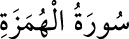

<a name=10859></a><br/>
<b>104- el-HÜMEZE SÛRESİ</b><br/>
<i><b>Hümeze, birini arkasından çekiştirmek, onunla alay etmek, kırmak ve incitmek</b></i><br/>
<i><b>mânâlarına gelir. Kıyâmet sûresinden sonra Mekke’de inmiştir, 9 âyettir.</b></i><br/>
